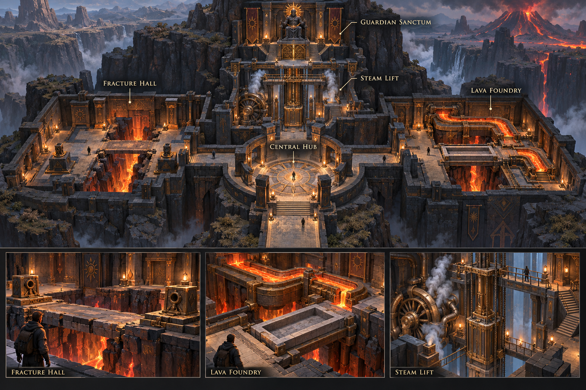
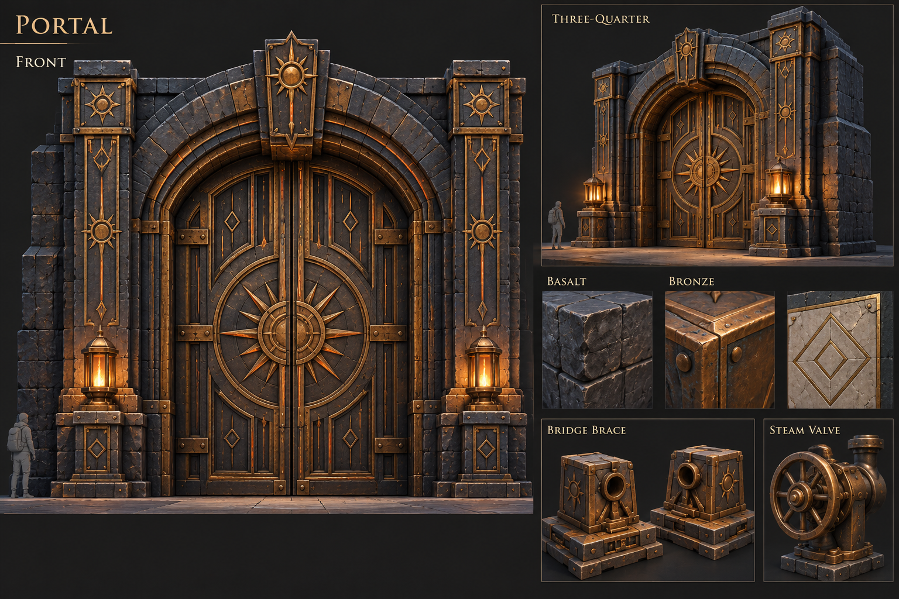
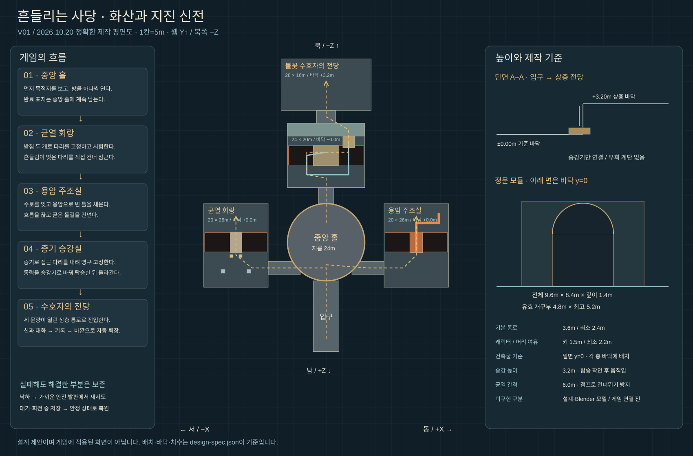
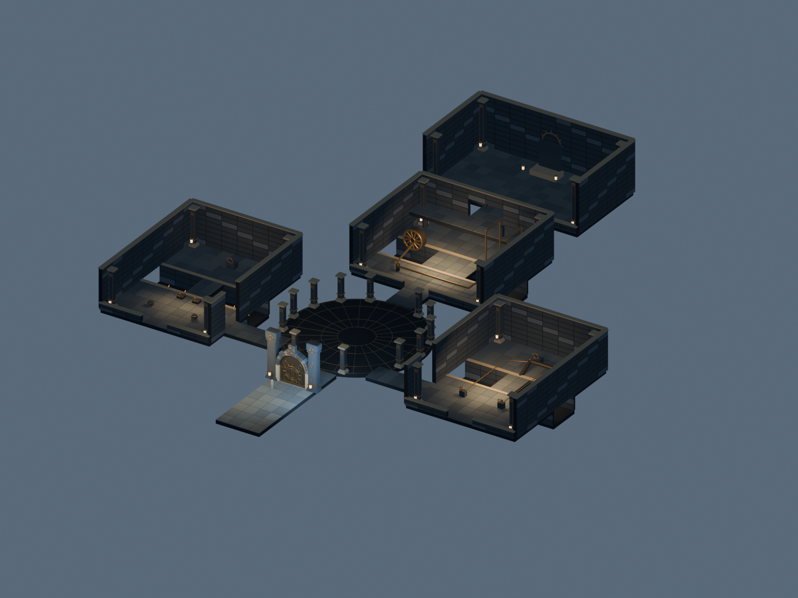
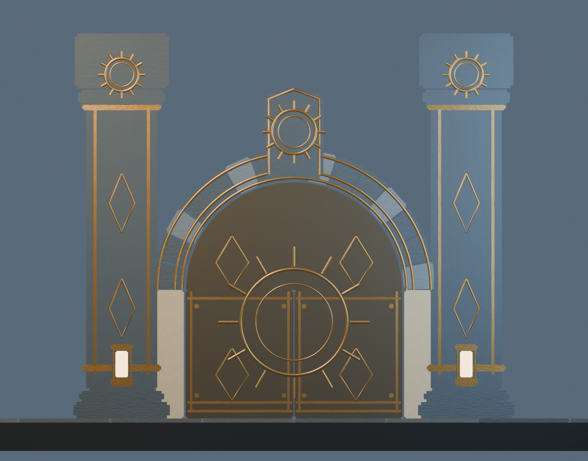
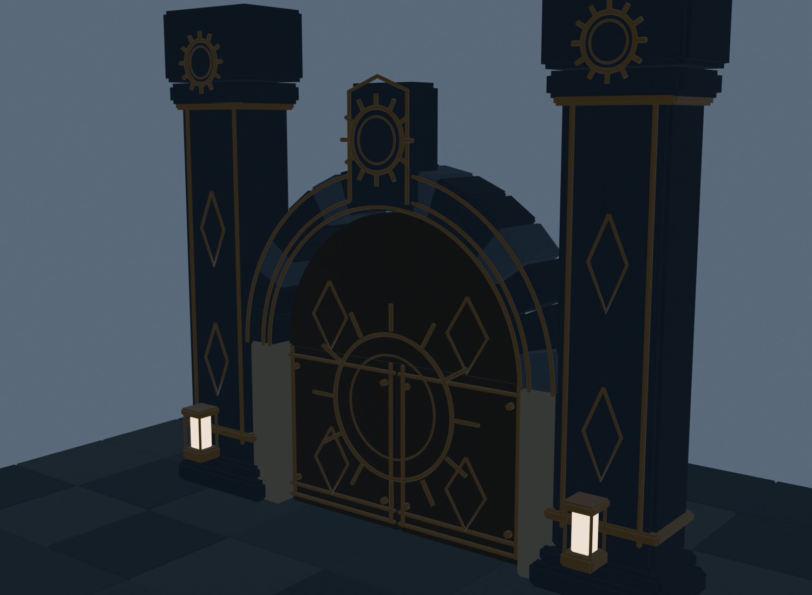
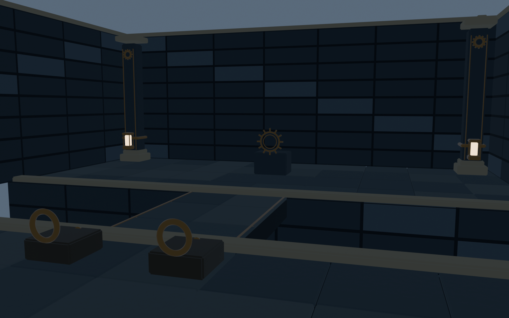
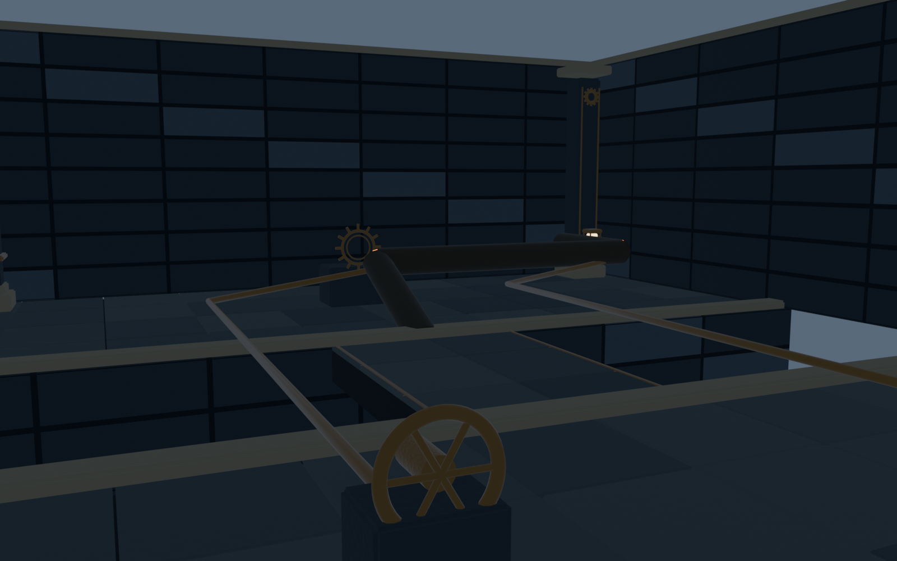
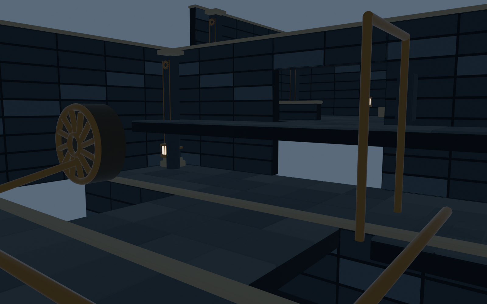
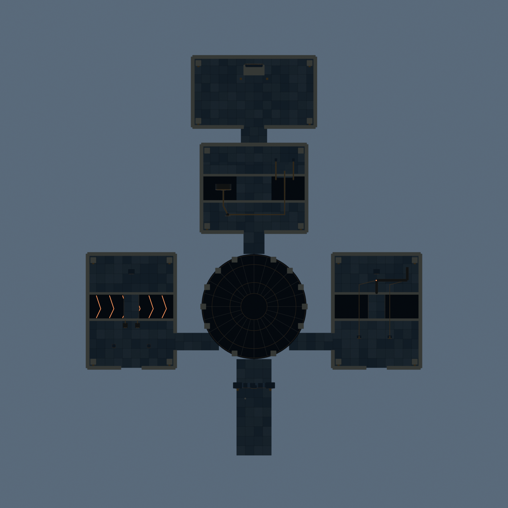

01 / ART DIRECTION
바위와 청동으로 만든 화산의 신전

생성한 목표 이미지. 게임 화면·정확한 치수 도면과 구분합니다.정문·장치 세부 시안 펼치기

02 / MAP & SECTION
보이는 건축과 실제로 걷는 길을 함께 설계

클릭하면 원본 도면을 확대합니다. 같은 design-spec.json을 도면과 Blender 모델이 공유합니다.
03 / PLAY LOOP
피하기에서 끝나지 않고, 공간을 바꿔 전진
1. 균열 회랑고정해서 건넌다
다리의 흔들리는 부위를 관찰하고 받침 둘을 배치합니다. 시험 후 안정된 다리를 건너 먼 쪽 손잡이로 잠급니다.
관찰 → 배치 → 시험 → 횡단 → 영구 잠금
2. 용암 주조실흐름을 돌길로 바꾼다
두 수로를 연결해 빈 틀에 용암을 모읍니다. 공급을 끊고 표면이 굳으면 새로 만든 길을 건넙니다.
연결 → 흘리기 → 공급 차단 → 굳히기 → 횡단
3. 증기 승강실동력을 바꿔 올라간다
증기로 접근 다리를 내려 잠근 다음, 동력을 승강기로 바꿉니다. 탑승해 출발하면 3.2m 상층으로 올라갑니다.
동력 A → 다리 잠금 → 동력 B → 탑승 → 상승
수호자와의 만남세 구역의 변화가 전당 문을 엽니다. 신과 대화하고 기록을 얻은 뒤 안전하게 퇴장합니다. 해결한 부분은 재시도 때도 유지합니다.
균열 회랑·용암 주조실·증기 승강실을 별도 시제품으로 연결했습니다. 아래 전체 모델·Blender 렌더는 최초 건축 단계이며 최신 주조 장치와 실제 화면은 제작 보고서에서 확인할 수 있습니다. 수호자 이벤트·본편 교체와 학생 재미 검토는 후속 단계입니다.
전체 상세 설계서 읽기 ↗최신 세 구간 제작·검증 ↗주조실 상세 도면 ↗증기실 상세 도면 ↗
04 / ACTUAL GEOMETRY
실제 Blender 모델 · 돌려 보며 확인
모델 불러오는 중…
드래그: 회전 · 휠/두 손가락: 확대. 이 3D 검수는 정적 건축 모델입니다. 장치의 애니메이션·충돌·상태 변화는 후속 구현 대상입니다. GLB에는 Blender 절차적 표면 요철이 아직 구워져 있지 않습니다.
05 / BLENDER RENDERS
그림이 아닌, 만들어진 모델의 실제 렌더

같은 도면을 읽어 생성한 건축 모델. 천장은 구조와 동선 검토를 위해 생략했습니다.
정문 · 정면
정문 · 사선
균열 회랑 · 1차 제작
용암 주조실 · 1차 제작
증기 승강실 · 1차 제작
실제 기하의 평면 확인